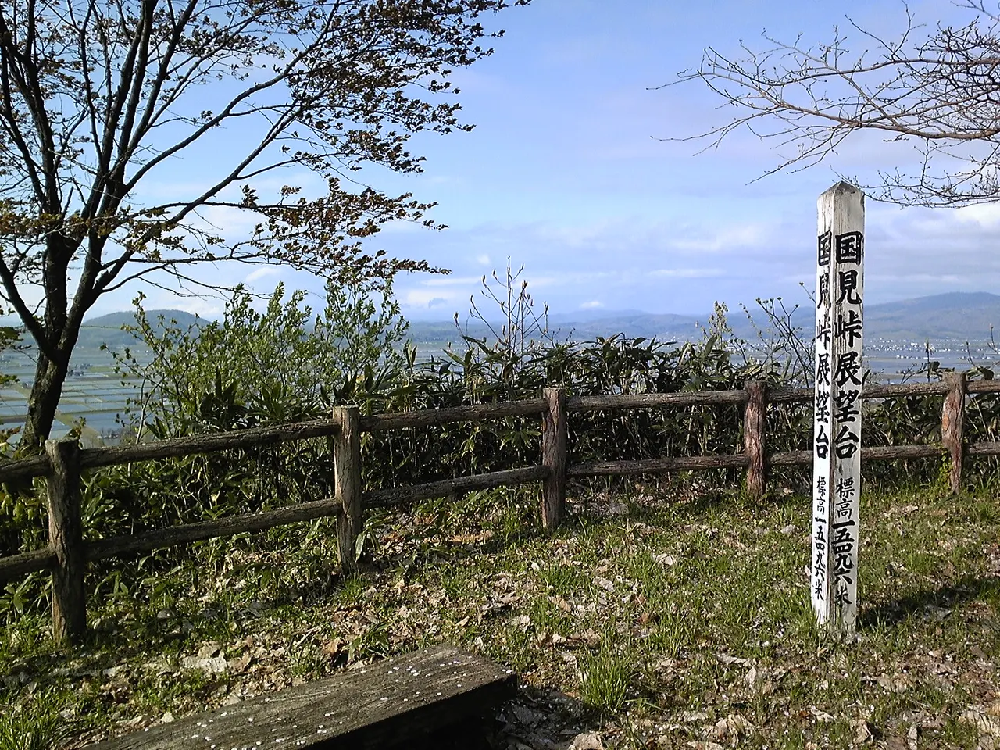
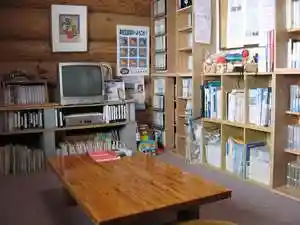
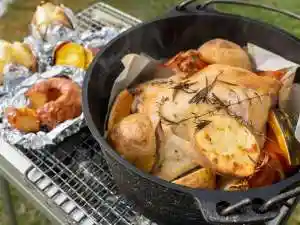
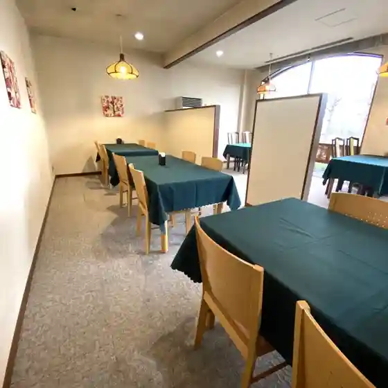
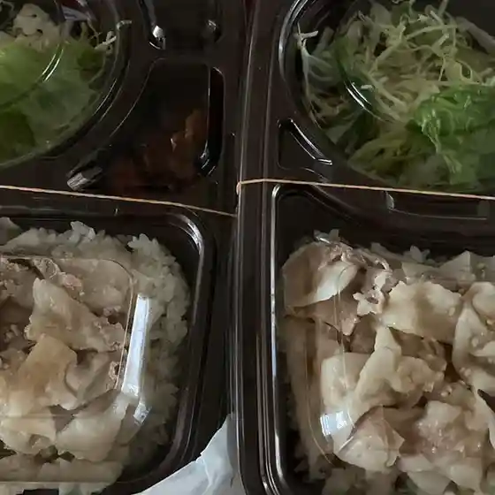
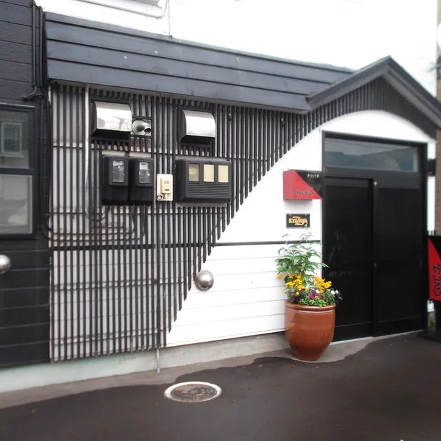
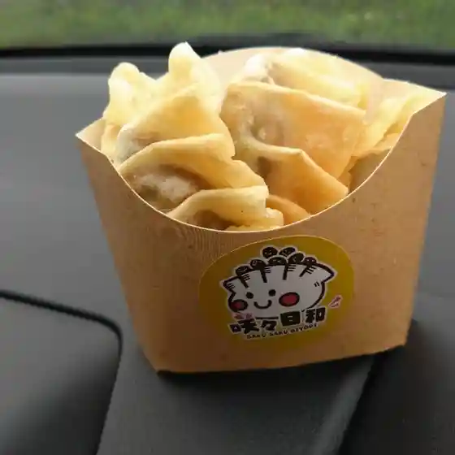
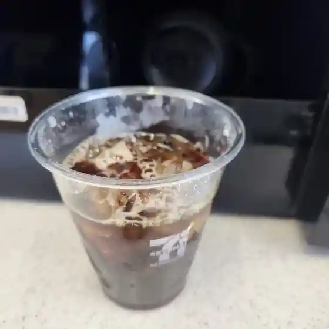

Fukagawa
Fukagawa · Hokkaido
Fukagawa
Highlighted on the Hokkaido map.

Stay
ラ・カンパーニュホテル深川
Ra Kanpaanyuhoteru Fukagawa
イルムの丘ユースホステル

Irumu No Oka Yuusuhosuteru
アグリ工房まあぶ

Aguri Koubou Maabu
Dining
いろはにほへと 深川店

Irohanihoheto Fukagawa Mise
ラ・カンパーニュホテル深川

Ra Kanpaanyuhoteru Fukagawa
レストラン セゾンドール

Resutoran Sezondooru
花さんぽ

Hana Sanpo
かんざし

Kanzashi
咲々日和

Saki (Kurikaesi) Hiyori
銀馬車

Ginba Kuruma
セブンイレブン 深川東店

Sebun'Irebun Fukagawa Higashi Mise
エフカップ
Efukappu
道の駅 ライスランドふかがわ 特産品販売コーナー
Michi No Eki Raisurando Fukagawa Tokusanhin Hanbai Koonaa
はし膳
Hashi Zen
アップルパイのほんだ 深川店
Appurupai Nohonda Fukagawa Mise
宮下商店 調理部
Miyashita Shouten Chouri Bu
高野喫茶
Takano Kissa
ベーカリーカフェ タンタアンナ
Beekariikafe Tantaanna
我が家
Wagaya
魚丸
Sakana Maru
日の丸亭 深川店
Hinomaru Tei Fukagawa Mise
お昼と夕と まんぷく
O Hiru To Yuu To Manpuku
セブンイレブン 深川4条店
Sebun'Irebun Fukagawa 4 Jou Mise
今保羅
Ima Pooru
不二家 深川三条店
Fujiya Fukagawa Sanjou Mise
ギリシャヨーグルト専門店 F
Girishayooguruto Senmonten F
マックスバリュ 深川店
Makkusubaryu Fukagawa Mise